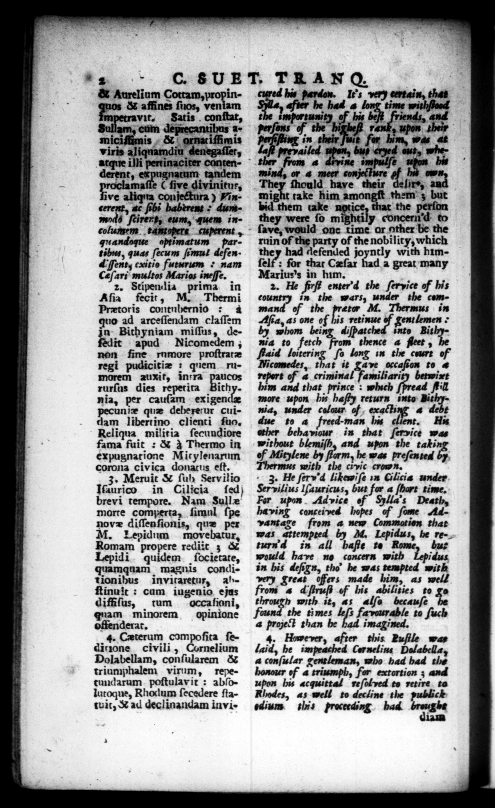

# 2 p — ä—ꝓT— -. —ß—ß·ibœm42 ß — EK — „% ũ * . we „ _ Pe & Aurelĩum Cottam, propin& affines ſuos, veniam — —8 3 2M cum deprecanti Amiciimis & ornatiſſimis viris aliquamdiu denegaſſet, atque illi pertinaciter cantenderent, 1 tandem aſſe ( five divinitus, clam provns tz conjectura) Vi 9 don 2 in. gruandoque optimatum tibrs, quas ſecum ſimu i An. dent, cxitio futurum 7 nam Ceſari multos Marias ineſſe. 2. Stipen lia prima in Aſia fecit, M. Thermi Prætoris contubernio à 10 ad arceſſendam claſſem jo. Bithyniam - miſſus, deit apud Nicomedem ; non fine ramore proſtrate regi pudicitiz : quem rumorem auxit, in: ra paucos rurſus dies repetita Bithy. nia, per cauſam exigen nie que debererur cuidam libertino clienti ſuo. Reliqua militia ſecundiore fama fuit : & à Thermo in expugnatione Mitylenarum corona civica donatus eſt. 3. Meruic & ſuh Servilio Ifaurico in Cilicia ſed) brevi tempore. Nam Sulle morte comperta, ſimul ſpe novz diſſenſionis, que per M. Lepidum move 3 Romam propere rediit 3 & Lepidi quidem ſocietate, quamquam magnis conditionibus invitaretur, abſtinuit: cum iugenio. ejas diffiſus, tum occafioni, quam minorem opinione offenderat. 4. Cæterum compoſita ſedirzone civili, Cornelium Dolabellam, conſularem & triamphalem virum, repetundarum poſtulavit: abſolutoque, Rhodum ſecedere ſtatwat, & ad declinandam invis | ruin of the * C. 8 UE. TRAN . | of the nobility, which they had defended joyntly with himſelf : for that Cæſar had a great many 4g = Ne eee PR ſerhice of bi 2. e ervice s 45 the wars, under the command of the pretor M. Thermus in Aſea, as one of his retinue of gentlemen by whom being diſpatched inte yay nia to fetch in that ſervice was without blemiſh, and wpon the taki of Mitylene by he was preſented Thermus with the crvic bo eg : 3. He fſerv'd likewiſe in Cilicis under Servilius Iſauricus, but for a ſhart time. Far upon Advice of Sylla's Death, having conceived hopes of ſome Advantage from a new Commation that was attempted by M. Lepidus, be return in all baſfie te bur od have no concern with 4. However, after this Puſfile was laid, be impeached Corneline Delabella, a conſular gentleman, who had bad the of 4 triumph, for extortion ; and upon his acquittal reſolved to retire to Rhodes, as well to decline the publick ediurs this proceeding. bad brought
